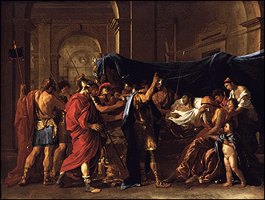
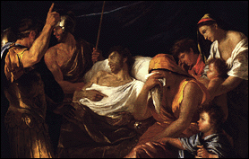
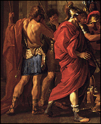
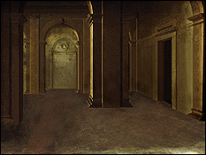

 (c)
Title: The Death of Germanicus
Artist: Nicolas Poussin (poo-SAN)
Date Painted: 1627
This painting is called The Death of Germanicus. It was made in Rome over 350 years ago, in 1627. The artist who painted it was named Nicolas Poussin (poo-SAN). Cardinal Francesco Barberini, an important man in the Catholic Church, asked Poussin to paint The Death of Germanicus so it could be hung in the Cardinal's palace. The painting tells the story of an event that happened in Rome over a thousand years earlier, in the year 19 A.D.
 (c)
Germanicus, the man lying in bed and wearing a white gown, was a Roman general. We see him in the painting after he has been poisoned by an enemy, probably the jealous Emperor Tiberius, who was Germanicus' adoptive father. Surrounding Germanicus are his wife (covering her face in grief), his children, his friends, and his loyal soldiers who are visibly upset about what has happened. One of them is raising his arm, as though to call for revenge.
 (c)  (c)
The image on the right shows what the room might have looked like without the people.
Nicolas Poussin chose to paint the story as it really may have looked, and in a Classical style. The people are wearing clothes like those worn by the ancient Romans, and the room looks like one that could have existed in the ancient empire. Poussin knew these things because, while living in Rome in the 17th Century, he studied the paintings, monuments, and architecture of over a thousand years before.